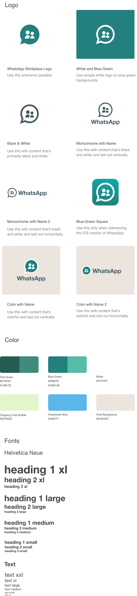
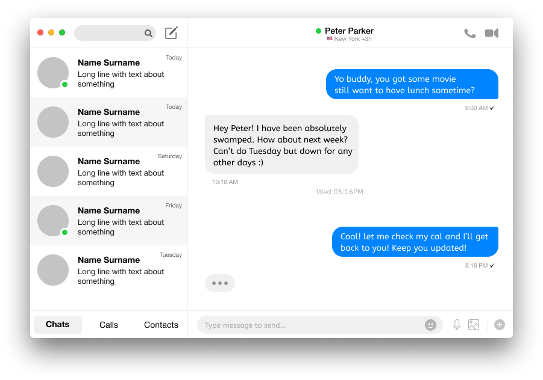

WhatsApp Redesign
Since launching in 2009, WhatsApp has quickly become the world’s most popular text and voice messaging application. More than 1 billion people in over 180 countries use WhatsApp to stay in touch with friends and family anytime and anywhere. WhatsApp is free and offers simple, secure, reliable messaging and calling, especially for small collaborative workgroups. And yes, the name WhatsApp is a pun on the phrase What's Up. In February 2014, Facebook purchased the messaging service WhatsApp for $19 billion — to become one of the largest tech buys of all time.
View Figma Prototype | View InVision Prototype
Role: UX Design, Visual Design, Brand Identity
Deliverables: User Surveys, Competitive Analysis, User
Personas, User Stories & Flows, Wireframes, Usability Testing, High
Fidelity Mockups, Prototype
Tools: Figma, InVision, Photoshop, Illustrator, Maze,
UsabilityHub

Problem Solving
CHAPTER #1 — Problems and Solutions
This is a WhatsApp redesign concept for my capstone project. I've always been a fan of WhatsApp and use it daily to communicate with international friends and family. Compared with other similar applications, WhatsApp requires you to share your cellphone number, and some people may prefer to keep this information private. However, when tested with users, it reveals a few pain points that they face while using certain features. I saw much potential for improvement in the app and ways to excel in the company further. With many ideas flowing through my mind, I decided to focus on the WhatsApp Web. WhatsApp Web allows you to send and receive WhatsApp messages online on your Desktop PC or Tablet.
Discovery phase
CHAPTER #2 — The Power of Research
WhatsApp Messenger takes the lead in multiple countries even when comparing all social and communication apps by the length of average monthly sessions per user. WhatsApp usage dominates in India, Brazil, Netherlands, Spain, and Italy:

More than a Messaging App
1. Smartphone adoption, as well as availability and
quality of mobile data, will continue growing in the coming years.
2. WhatsApp will continue to grow its user base while
redefining itself to be more than a communication app.
3. Messaging apps marketing is likely to become the
next big thing in social media advertising.
4. WhatsApp Statistics are becoming more and more
relevant to businesses but the quality and clarity of their
presentation are lagging behind.
5. WhatsApp usage is specific to countries and even
region within the countries. Always check whether or not the global
data accurately reflects your user base.

Understanding the users
The first UX challenge that I encountered on this project was finding
the limitation within the WhatsApp Web platform. In doing so, I had to
completely break Whatsapp into sections in order to have a clear
understanding of how it works and what the user gets by using it. The
survey
deployed to discover pain points and behaviors surrounding the
WhatsApp app. Most of the participants who were interview and filled
out were men. The ages varied between 20–35 years. Below are the
user's pain points:
Video Files Not Allowing Preview. Need the ability to preview
a video before downloading.
The group messaging system needs improvement. In group
management more functions should be provided.
WhatsApp Web video call is not available. Video calling
feature has not been added.
Quality of image and video. It reduces the quality of the
photos while sharing.
Contacts search. Time-consuming to locate where to find
contacts.
Competitive Analysis
Skype recently merged its contacts with old MSN or
Hotmail accounts and its contacts, connecting you to some pretty
longtime friends. Skype is not only a great way to call for free,
but it also allows for text messaging with your contacts. Unlike
WhatsApp, you’ll have to approve contacts before you can start
sending messages but its reliability and stability make it a
suitable replacement.
Complete SWOT Analysis
Here
Telegram is a cloud-based instant messaging (high security)
and voice over IP service that works just like other messaging apps.
Currently, there is no option for video calling in Telegram. Only an
audio calling facility is available. But we can record video and
send to our contacts.
Complete SWOT Analysis
Here

Facebook Messenger is finally getting desktop apps almost 9
years after its debut. After seeing over a 100% increase in desktop
browser audio and video calling, Messenger today releases its Mac
and Windows desktop apps. The only drawback is that you can’t use it
to communicate with friends who are not on Facebook.
Complete SWOT Analysis
Here
User Personas
Personas are helpful throughout the entire product development phase: from deciding on which features to have in a prototype, to evaluating the end product. When combined with additional user experiences design methods, such as usability testing and task analyses, personas are vital to launching a useful and usable solution. Enter Rajeev, Larry, and Jessie, three vastly different personas to embody the full range of WhatsApp’s target audience.

Mapping the MVP with user stories & flows
Keeping these personas in mind, I compiled a list of user stories focusing on the highest and medium priority tasks to reach the minimum viable product. I then converted the user stories into user flows to show how the user can accomplish the primary tasks. Also, in this stage, I decided to make a sitemap so we could understand better the user’s paths and the platform’s structure.
Sending a Message to a Contact User Flow
WhatsApp Sitemap

Branding & Identity
CHAPTER # 3 — WhatsApp redesign concept
WhatsApp brand is focused on consistently reinforce the passion and commitment to connecting the world through real-time communication. My redesign inspired by WhatsApp's original logo with the chat bubble shape. I choose the people icon for a symbolized group message. The branding also appears in blue-green because of the recently merged. It will be blue for Facebook and green for WhatsApp.

Drawing Board
CHAPTER # 4 — To build the skeletal structure
Tech and new media are fundamentally changing human interaction. For many, myself included, the notion of giving out your phone number is considered far more intimate than following someone on social media. Most people may prefer to keep this information private. Therefore I conducted other ways for users to log in; 1) Enter a google voice number. Users can separate their work and personal life by getting another phone line from google or other webphone platforms— 2) a URL link, where anyone with your team URL can join.

Round 1: A usability test on WhatsApp Web
Usability Testing Stages
Tasks are prioritized based on how frequently a user will perform
them. Each task is marked with a point from 1 to 3. The selected tasks
are given to users along with instructions. Two methods are followed
to collect their feedback.
⦁ Users are observed while performing actions
︎⦁ They were talked about their experience when they
perform certain tasks
Task 1: Send a message to your friend
User flow for Task 1: Send Message
Task 2: Share photos with your friend
User flow for Task 2: Send Photos
Round 2: Testing the wireframe prototype
If I had moved onto wireframe testing at this point in the process I would have overlooked some of the most glaring issues living within my wireframes. Before moving onto high fidelity mockups, I needed to validate my design decisions through testing. To do this, I used Maze to test mission-based tasks and InVision to conduct in-person usability tests using a wireframe clickable prototype and a test script. Both served as key tools to gather feedback that informed revisions to key action items.

User Testing Results
Finally, referring back to the problem objectives, I knew I had to address the group message and contacts search for the WhatsApp interfaces.
Pain Point 1: Group Chat Functionality Features. In the case of navigation, the Menu on the top left groups irrelevant features together, making it difficult for the user to understand WhatsApp's functionality features.

Add New Group Chat
Recommendation 1. In this feature, the user can access the functions, including “New Group”, “New Broadcast Lists”, “New Secret Chat”. This will be convenient and relevant for their daily WhatsApp uses.
Add Participants to New Group
Pain Point 2: Finding a Contact There are two ways to start a new chat: 1) Search within the Chats list, 2) Go to New Chat icon on top and search contact. The user was not clear to differentiate between these two options. Searching in Chats list gives an assumption that search will run through the Chats list only, and in fact, it works for both Chats and Contacts. On the other side, the New Chat option also provides a list of Chats as well as Contacts.
Search a New Contact
Recommendation 2. A clear separation between Chats and Contacts needs to provide. This can be done by giving a filter option in the Contact list, or a single record can be sorted based on Recent Chats or Contact names.
Provides a Filter at the Bottom of Contact List
Pain Point 3: Preview and Attaching Photos The close icon with the Preview title is confusing. The user clicked it to close the preview of selected photos, but it discards all the selected photos. Adding more files option is not clear. The Attach icon still displays on top, but it is not functional. The user clicked on that icon first. It is difficult to navigate a large number of selected files.
Preview Media Files in Menu Dropdown
Recommendation 3. I believe moving the important features of the application to organize all of the relevant features to one icon on the bottom right of the screen- that is the most effective way in terms of the thumb area. But for the desktop version, I have also created a dropdown option in the menu renamed to Media Files to avoid any confusion for the user. Users can easily find what kind of files they what to shard by clicking the Media Files from the Menu icon.

Final Mockup and Prototype
I decided to work on WhatsApp application for desktop because I usually reply to messages while I am on desktop working. I hope my idea will be a real application soon. What I made here is a concept for Mac application, according to the new Mojave OSX style guide.
VIEW PROTOTYPE
Summary
CHAPTER # 5— Review, Refine, Redesign
After gathering data from the existing product and competitors, I was ensuring an understanding of the business goals for the project and ready to start my WhatsApp redesigning in earnest. I created a site map and user flow of the information architecture to tested my redesign with users. Once I get feedback on what they like about and what may frustrate them. I start my wireframing and building prototypes. I leared an amazing user experience redesign can only be provided by following an iterative and intricate design process. Finally, we reach the end of my project. There are still a lot of things that I don’t know about UI/UX, but I always challenge myself to keep learning and be a better designer every single day.
The final WhatsApp prototype after both rounds of user testing and iterations can be viewed here.